Livre CAP IFCA
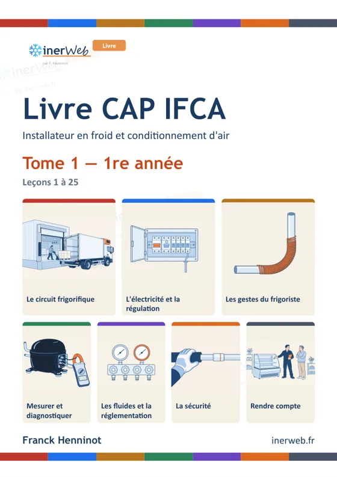
Tome 1 — 1re année
leçons 1 à 25 · 206 pages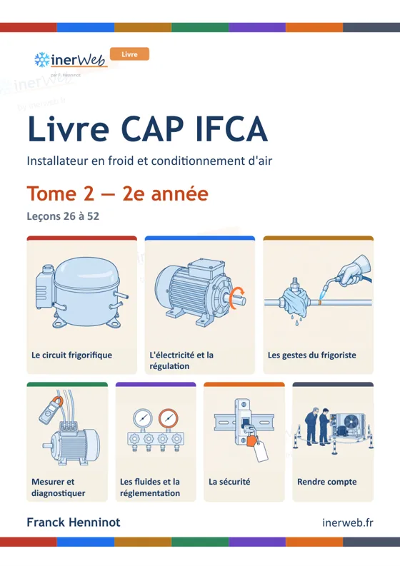
Tome 2 — 2e année
leçons 26 à 52 · 222 pages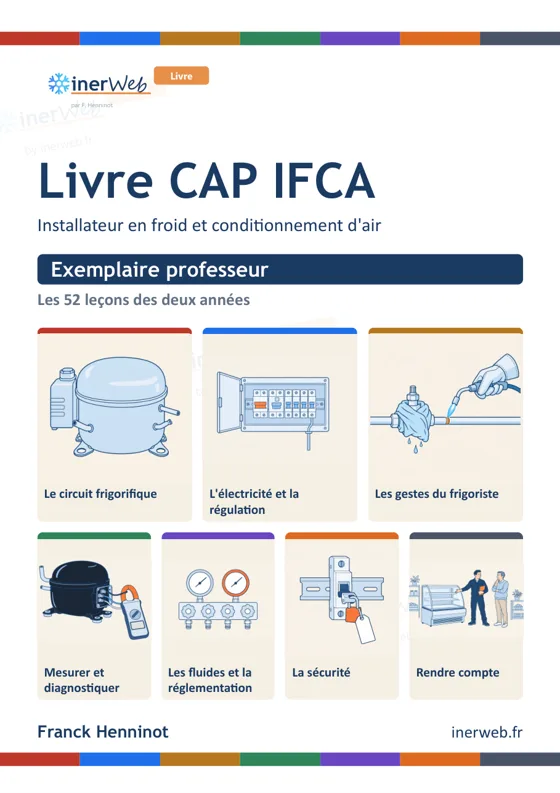
Exemplaire professeur
corrigés, conduite de séance · 112 pages
Extrait du tome 1 : leçon 15, Surchauffe et sous-refroidissement (PDF, 12 p., 6,5 Mo) Extrait du tome 2 : leçon 30, Le pump-down (PDF, 12 p., 9,1 Mo)
Livre Bac Pro MFER
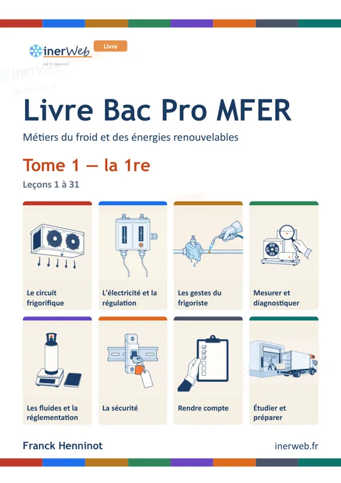
Tome 1 — la 1re
leçons 1 à 31 · 254 pages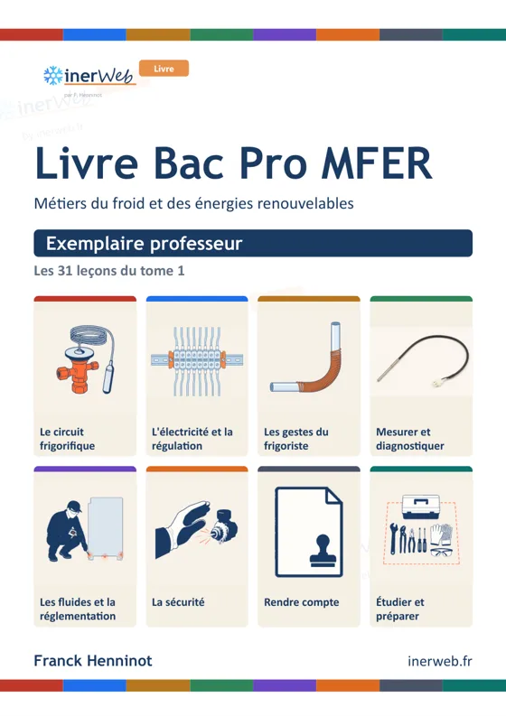
Exemplaire professeur
corrigés, conduite de séance · 70 pages
Extrait du tome 1 : leçon 5, Le diagramme enthalpique (PDF, 12 p., 6,3 Mo)
Lire les plans, tome 1
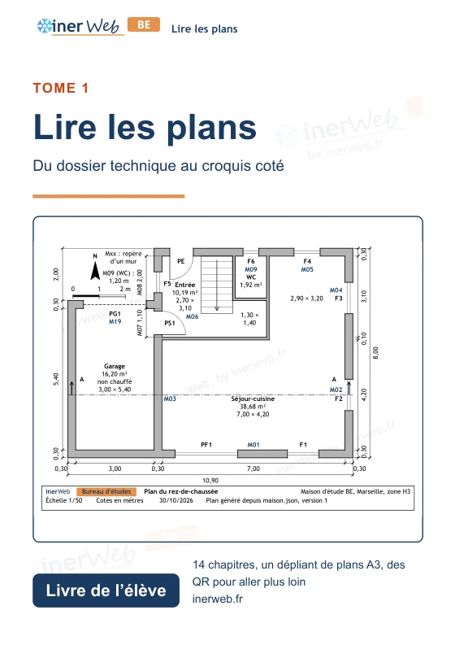
Livre de l'élève
14 chapitres, trois dépliants A3 · 212 pages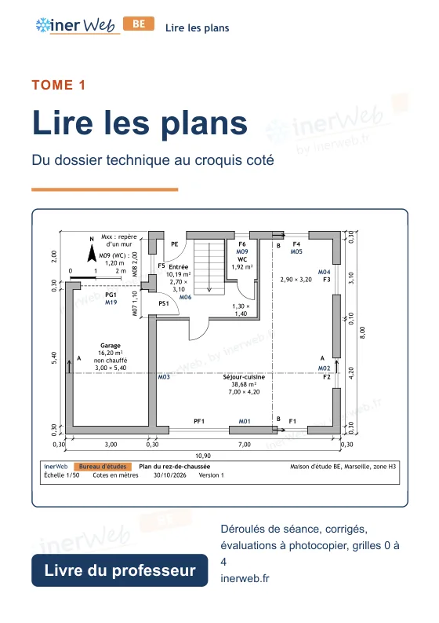
Livre du professeur
déroulés, corrigés, évaluations à photocopier · 149 pages
Extrait : chapitre 6, Les échelles, avec le dépliant (PDF, 18 p., 0,6 Mo) La ligne « Lire les plans » en ligne
Cahiers métier
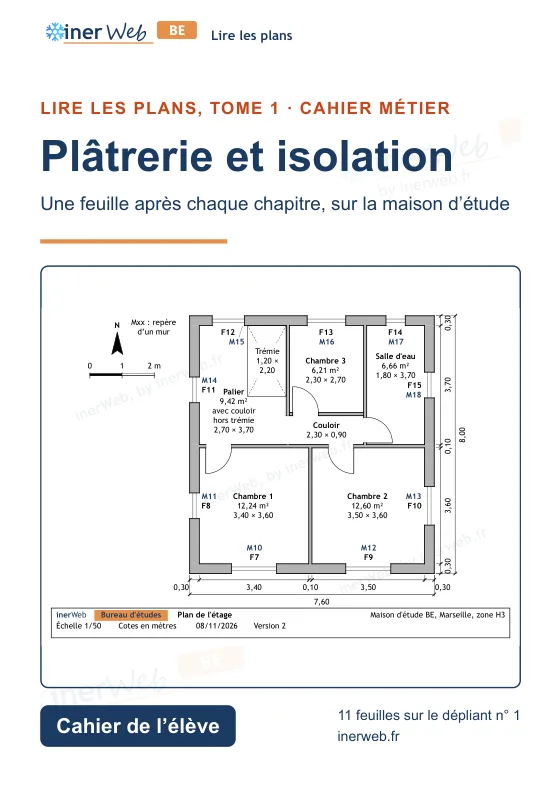
Cahier Plâtrerie et isolation
pour les plaquistes · 36 pages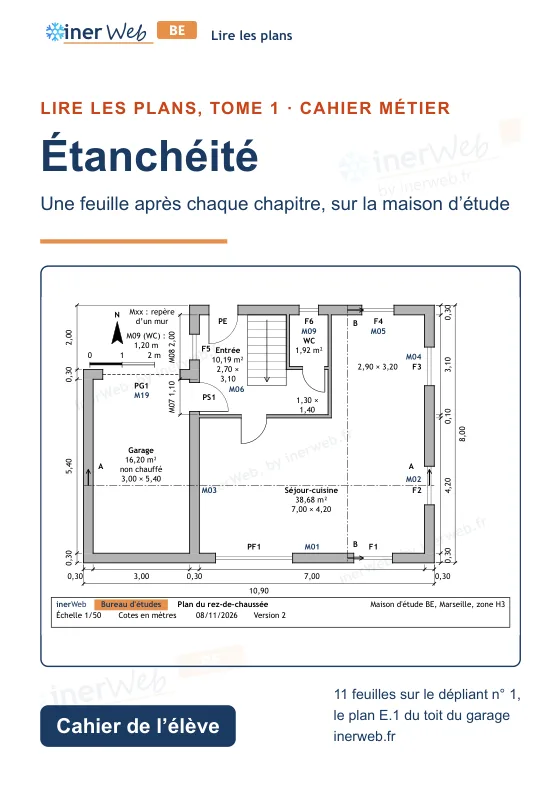
Cahier Étanchéité
pour les étancheurs · 36 pages
Extrait du cahier Plâtrerie et isolation : feuilles des chapitres 4 et 6 (PDF, 9 p., 0,6 Mo) Extrait du cahier Étanchéité : plan du toit, feuilles des chapitres 4 et 6 (PDF, 10 p., 0,6 Mo)
Bureau d'études CVC-R, tome 1 À paraître

Livre de l'élève
12 chapitres, le dossier de la maison · 508 pages
Livre du professeur
déroulés de séance, corrigés · 210 pages, plus un cahier de douze évaluations à photocopier
Aperçu : chapitre 6, Les déperditions d'un local par ses parois, avec la couverture et le sommaire (PDF, 41 p., 2,9 Mo) Le réseau Bureau d'études en ligne
Les livres des habilitations
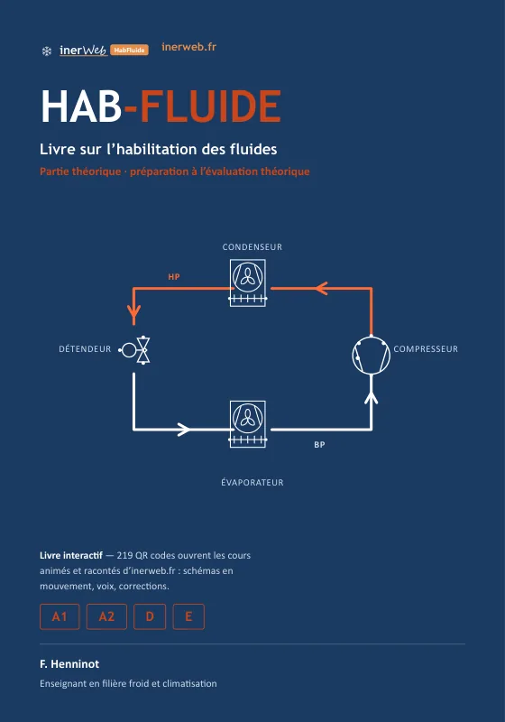
HabFluide, partie théorique À paraître
fluides frigorigènes · 444 pages, 219 QR codes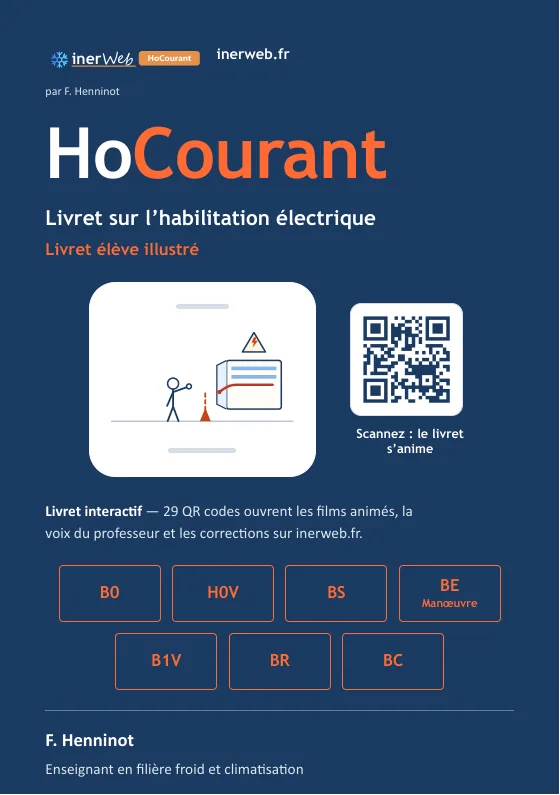
HoCourant
habilitation électrique, de B0 à BC · livret de 124 pages, 29 QR codes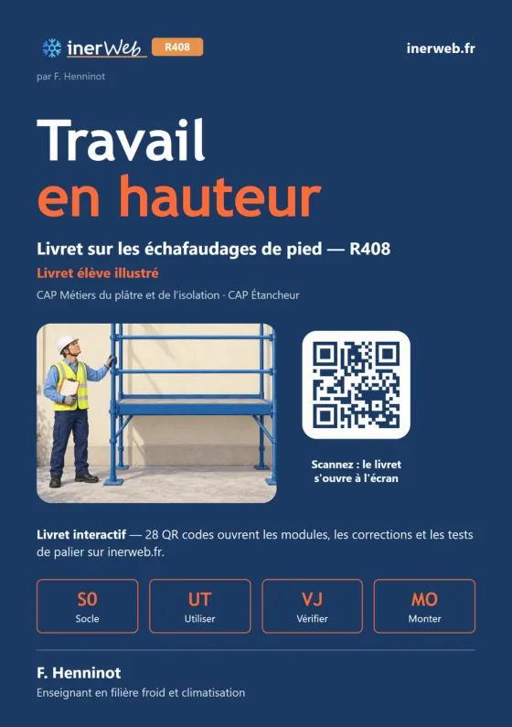
Travail en hauteur
échafaudages de pied, R408 · livret de 122 pages, 28 QR codes
Extrait de HabFluide : le début du livre et le test d'entrée (PDF, 20 p., 1,8 Mo) HoCourant en ligne Travail en hauteur en ligne Les trois habilitations
Se procurer les livres
Vous enseignez
Pendant la phase bêta, le livre complet vous est confié gratuitement, en spécimen à votre nom. Vos retours de classe aideront à l'améliorer.
Écrivez depuis votre adresse académique (…@ac-….fr) : votre demande est traitée en priorité. Chaque exemplaire est numéroté à votre nom.
Demander un spécimenÉtablissement, CFA, centre de formation
Un exemplaire pour toute une équipe, avec l'exemplaire professeur et les leçons à projeter. Les conditions se fixent ensemble.
Écrire à l'auteurVous êtes élève
Votre professeur vous donne accès au livre. Les cours animés, les films et les simulateurs restent libres sur inerweb.fr.
Aller sur inerweb.frDroits réservés. Les extraits se lisent et se partagent tels quels, sans modification ni usage commercial. Le livre complet ne se diffuse pas : chaque exemplaire porte le nom de son destinataire. Le contenu technique vient de l'expérience et du métier de l'auteur, Franck Henninot ; la mise en page, les dessins et le code ont été fabriqués avec l'aide de l'intelligence artificielle : l'auteur a conçu, dirigé et vérifié.